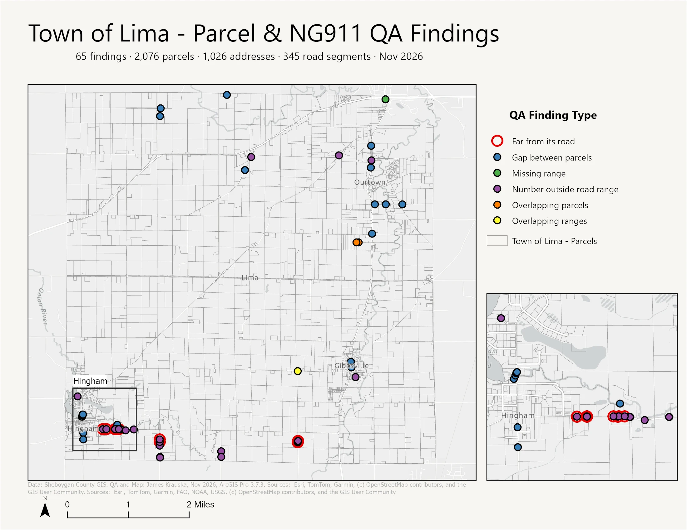

Parcel & NG911 Data QA Toolkit
A script tool that checks a county's tax parcels, address points and road centerlines against each other and against NG911 rules, then maps every item that needs a second look. Run here on all of Sheboygan County's public land records.
These are items to review, not a grade. Some will be legitimate exceptions that only the county's records staff can confirm. Not an official Sheboygan County product.
Every item to review, by check
Turn checks on and off, zoom in, and click a dot for the details and the feature IDs a records clerk would need to find it.
Basemap: Esri World Light Gray Canvas. Findings from Sheboygan County's public parcel, address point and road centerline services, downloaded October 26, 2026.
What the checks catch
Four real findings, drawn from the county's own geometry.
Nineteen checks, three layers
Counts are per feature, or per street address for address-point checks, so an apartment building's 40 unit points count once.
Five parcels, drawn from their deeds
Before checking the county's parcel map, I drafted five parcels myself from the legal descriptions in the tax roll: COGO traverses in an ArcGIS Pro parcel fabric, each starting from a PLSS corner. Four close to within 0.12 ft. On every one, the county's mapped polygon matches at the point of commencement and drifts a few feet at the far corners: a tax map is built for assessment, not as a survey.
Drawn in the county's coordinate system (WISCRS Sheboygan, US feet), north up. Offsets are corner-to-corner distances measured in ArcGIS Pro 3.7.3; at these scales the two outlines overlap.
Parcel 59010122560: a 4.72 ft gap
Entered exactly as recorded, this six-course description misses its starting point by 4.72 ft, a precision of 1:559. The four other parcels closed at better than 1:10,000. The gap points almost due north, so a single north–south distance is the likely error. There are three ways to make it close, and each one changes something different:
| Approach | What changes | Result |
|---|---|---|
| Compass rule (ArcGIS Pro) | Every course a little: bearings turn about 6 minutes, north–south sides change by up to 1 ft | Closes · 9.83 ac |
| Fix one course | The last course, S 511.90 ft → S 516.62 ft; everything else as recorded | Closes exactly · 9.87 ac |
| The county's parcel map | Every recorded distance kept; bearings rotated 20–30 minutes. It traces two recorded surveys in the county's survey layer | Closed · 9.84 ac, the tax-roll figure |
How I handled it. I entered the description as recorded, and it misclosed 4.72 ft (1:559). I let the compass rule close the geometry so the parcel could be built, kept the record distances in the fabric, and flagged it. The county's own map holds the distances and rotates the bearings, and a single 4.72 ft change on the west line would close it exactly, so the deeds and the two recorded surveys should settle which line is wrong before anyone changes the record.
The fabric stores the recorded bearings and distances as attributes even after adjustment, so the record itself is never edited. Correcting a legal description is a licensed surveyor's job; this is a computation from the record, not a new description.
Every legal description, drawn and checked
Drafting five parcels by hand showed what to look for. A reader written in Python then did the same for every metes-and-bounds description in the county's tax roll, and checked each one two ways: does it close, and does it match the parcel the county mapped?
The tax roll stores each description in a shorthand field (TAXDSCRP). This is Parcel 59010122560, the one from the section above that doesn't close, exactly as the county stores it:
PRT SW NW,SEC 11,COM AT SW COR SD1/4,TH E 425.47',S89 DEG 22'17"E 304.60',N0 DEG 3'39"W 582.58',N88 DEG 35' 9"W 729.74',S0 DEG 3'39"E 80.63',TH S 511.90'TO BEG, SUBJ TO HWY CONV AS REC IN VOL 385 P 158-59.(VOL 404 P 361-62,VOL 854 P 750)
The reader finds the point of commencement, any tie courses to the point of beginning, each boundary call and the end, then writes a review table that puts every call's source text next to what it read, so any number can be traced back to the record:
| Call | Source text | Read as |
|---|---|---|
| 1 | E 425.47' | E 425.47 ft |
| 2 | S89 DEG 22'17"E 304.60' | S 89°22′17″ E 304.60 ft |
| 3 | N0 DEG 3'39"W 582.58' | N 0°03′39″ W 582.58 ft |
| 4 | N88 DEG 35' 9"W 729.74' | N 88°35′09″ W 729.74 ft |
| 5 | S0 DEG 3'39"E 80.63' | S 0°03′39″ E 80.63 ft |
| 6 | S 511.90' | S 511.90 ft |
| Misses closure by 4.72 ft toward north (1:559) · 9.87 ac as written · flagged L01 | ||
Parsing is deterministic: written rules, no machine learning, so the same text always reads the same way. The rules cover what the tax roll actually contains: bearings written as S89 DEG 22'17"E, S00°12'01"E, N-89-DEG-57'-13"E or S 89*W; due-direction calls like E 425.47'; half-foot distances; ties given as 1316.57'W & N0 DEG 22'28"E 512.98' FROM E1/4 COR; dropped commas; record values in parentheses; curves read by their chord; and road names like CTH N or R/W that look like directions but aren't.
The answer key: my five hand-drafted parcels
The reader was tested against the five parcels I drafted with COGO in ArcGIS Pro, from the tax-roll text alone:
| Parcel | Courses | Misclosure, by hand | Misclosure, reader | Area, reader |
|---|---|---|---|---|
| 59004034130 · Herman | 4 | 0.12 ft | 0.12 ft | 1.59 ac |
| 59008093220 · Lima | 5 | 0.00 ft | 0.00 ft | 3.65 ac |
| 59111521840 · Cascade | 6 | 0.00 ft | 0.00 ft | 4.50 ac |
| 59010122560 · Lyndon | 6 | 4.72 ft | 4.72 ft | 9.87 ac9.83 ac after the compass rule |
| 59010122221 · Lyndon | 18 + tie | 0.11 ft | 0.11 ft | 38.44 ac |
All five match, including the 50 ft tie from the section center, a description the tax roll cuts off mid-word ("TO B"), and the 4.72 ft gap. The test file also covers the other formats above and re-reads the traverse files it writes.
Two new checks
| Code | Check | Parcels |
|---|---|---|
| L01 | Description doesn't closeRead in full and misses by more than 1 ft at worse than 1:5,000 | 1,087 |
| L02 | Description doesn't match the mapped parcelCloses, but the drawn shape is more than 10 ft from the mapped outline after best fit, or its area differs by more than 5%. In 254 of these the mapped parcel fits inside the description: the description runs to a road centerline or section line and the map stops at the right-of-way, so these are marked low severity. | 552 |
Most tax-roll descriptions don't give coordinates for their starting corner, so the drawn shape is placed by best fit: moved onto the mapped parcel's centre and turned up to 3° to allow for a different basis of bearings. Descriptions that cut out exceptions, add a lot, or describe several tracts aren't compared, because the courses cover only part of the parcel.
What L01 catches
- 59026385841 runs S 88°43′16″ W 834.89 ft and returns N 88°43′16″ E 823.89 ft: one wrong digit, and the parcel misses by 12 ft.
- 59004032630 runs N 85°40′ W 422.9 ft twice. The closing call has to run east, so as written it misses by 843 ft.
- 59024342760 goes 724 ft east and comes back 687 ft west: a 37 ft gap in a 22-acre description.
In a random sample of 20 L01 findings read by hand, 18 were real misclosures in the tax-roll text, from rounding and "M/L" calls to typos like these. The other 2 were misreads of garbled or cut-off text. The reader also recognizes when a description doesn't mark its point of beginning, or ends back at its point of commencement, and treats the first calls or the tie line accordingly instead of reporting a false gap.
What it leaves alone
4,934 descriptions are read only in part, usually because a call runs "to the N line of the SW SW" or "along the bank" with no distance, or follows a road "NELY" with no bearing. Those can't be checked from the text alone and are counted, not flagged. 43,110 parcels have no metes-and-bounds courses at all: they are described by lot, block or quarter-quarter, or as "the N 396 ft of" a larger description.
Back into ArcGIS Pro
For any single parcel the reader writes an ArcMap-format traverse file that ArcGIS Pro's Traverse pane loads directly. This is the one for Parcel 59010122560, with a start point estimated from the county map, to be snapped to the PLSS corner in the parcel fabric:
DT QB DU DMS SP 153299.206 156910.712 DD N90-0-0E 425.47 DD S89-22-17E 304.60 DD N0-3-39W 582.58 DD N88-35-9W 729.74 DD S0-3-39E 80.63 DD S0-0-0E 511.90
ArcGIS Pro 3.5 and later include COGO Reader, which reads a scanned deed image one parcel at a time. This reader is built for the other job: checking every description in a county's tax roll in one pass and turning the problems into a list someone can work through.
Findings: legal_desc_findings.csv (parcel ID, check, severity, plain-language detail, location). Code: legal_desc and its tests. Bearings and distances are used as written; the tax roll's are WISCRS Sheboygan grid, US survey feet. This is a computation from the record, not a survey.
The same checks as a Pro toolbox
The checks also run as a Python toolbox inside ArcGIS Pro 3.7.3, on whatever is selected in the map. Run on the Town of Lima (2,076 parcels, 1,026 address points, 345 road segments), it found 65 items in 11 seconds. The 11 addresses ringed in red are both far from their linked road and outside its number range: a sign they point to the wrong road segment, not that the house number is wrong.

The same checks as spatial SQL
All 19 checks are also written as SQL views in PostgreSQL 18.6 with PostGIS 3.6.2, on a schema with lookup tables in place of geodatabase domains, foreign keys, CHECK constraints and spatial indexes. Run on the whole county, the SQL and Python versions return the same 1,323 findings on the same features. A Quarto report reads the database and rebuilds every table, map and chart when the county updates its data.
- Download. A Python script pages through the county's ArcGIS REST services and saves every feature in the county's own coordinate system (WISCRS Sheboygan, US feet). Downloading in latitude and longitude first produced 62 false "invalid geometry" errors from rounding; the native download left 5 real ones.
- Parcels. Overlaps found with a spatial index; gaps found as holes in the dissolved parcel fabric that are not road right-of-way; duplicate IDs, empty required fields, slivers and invalid shapes.
- Address points. Each point is tested against the parcel it sits in, the road segment its centerline ID points to (street name, house number inside the range, odd or even on the correct side, distance), the municipal boundary, and every other point for duplicates.
- Road centerlines. Address ranges that mix odd and even numbers, segments of one street that claim the same numbers, and segments that addresses link to but that have no range.
- Output. One error layer (GeoPackage) with a check code, severity, the feature IDs involved and a plain-language description, plus a summary table. Field names live in a small settings file, so another county is a new settings file, not new code.
Keeping false alarms down
- Right-of-way is not a parcel. 3,670 polygons in the parcel layer are road right-of-way strips with no owner or municipality. They count as fabric for gap detection but are never flagged as parcels missing an owner.
- One parcel can have several pieces. Pieces that share an ID and an owner are normal; only pieces that disagree on owner or address, or overlap each other, are flagged.
- Direction doesn't matter. Road ranges are compared odd with odd and even with even, so two segments of a street digitized in opposite directions don't trigger a false overlap.
- Highways and ramps are expected to have no address range and are skipped.
- Tested on a planted county. A small synthetic county with one error planted for every check runs before each change; every check has to catch its error and nothing else.
What I'd do with the results
- Send the 545 address-to-segment link fixes to the addressing editor first: they are quick to correct and they feed 911 call routing.
- Check the overlaps where one parcel sits inside another against the recorded Certified Survey Maps; those are likely splits that never reached the tax parcel layer.
- Rerun the tool after each edit cycle and track the counts over time.
I chose the county, defined the checks around Wisconsin parcel and NG911 requirements, reviewed samples of every check by hand and tuned the rules until the findings held up. The scripts and this page were written with AI-assisted coding (Claude).
The ArcGIS Pro script tool and the five drafted parcels are done. The legal description reader extends the drafting to every description in the tax roll, with my hand-drafted parcels as its answer key.
- Python · geopandas · shapely
- ArcGIS REST API
- NG911 / NENA data model
- Esri Local Government model
- Leaflet
- ArcGIS Pro parcel fabric
- COGO traverses
Data
- Sheboygan County Land Information and Addressing, public ArcGIS REST services: Tax Parcels, Site Address Points, Road Centerlines, Municipal Boundaries. Downloaded October 26, 2026.
Where the data came from
The county's public land records are downloaded once, checked two ways, in Python and in SQL, and the two sets of results are compared before anything is published.
Drawn with Mermaid. The diagram's source is data_flow.mmd in the site's repository.